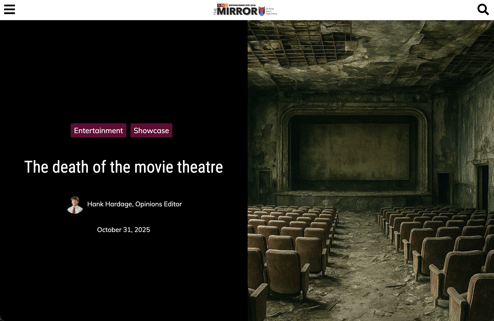
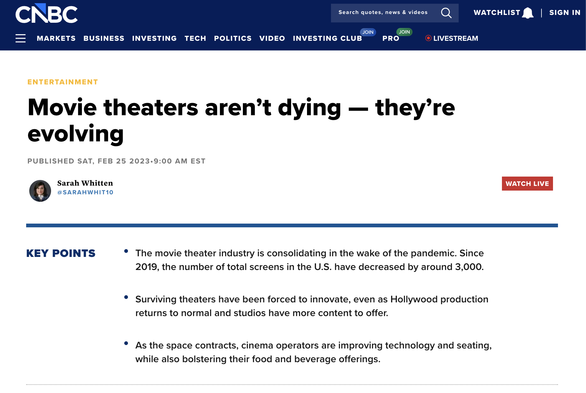

Exploring the factors that influence moviegoers' decisions to watch films in theaters versus at home through genre, streaming habits, budget, and demographics.
With the rise of streaming services, the movie theater industry faces increasing pressure. Are audiences abandoning the big screen, or is the experience still irreplaceable? This project investigates moviegoing behavior, barriers, and what drives people to show up.
Prior research spans multiple perspectives, from industry observers declaring theaters obsolete to others arguing they're simply evolving. Our findings are drawn directly from survey data and real film statistics.


Our data was collected through a survey distributed to family, friends, and a public forum. Respondents shared demographic info, movie-watching habits, and their personal barriers to going to the theater.
We collected 121 responses over one month, exported to Excel. The cleaning process was minimal since all responses were standardized in the survey. Only location data required cleanup, which was ultimately unused in the visualizations.
Five charts exploring theater attendance patterns across genres, demographics, streaming habits, and individual films.
Genre is a significant predictor of theater attendance. Animation, in particular, draws female respondents to theaters at higher rates than male respondents.
Counter to expectations, more streaming subscriptions actually correlate with more theater visits, suggesting movie enthusiasts engage across all formats, not one or the other.
Cost is the leading barrier to theater attendance across all demographics, followed by time constraints — not a preference for streaming content.
Critical reception (RT score) shows a weaker correlation with theater attendance than might be expected — audience familiarity and cultural buzz may matter more.
Areas of improvement/future considerations.
One area for improvement given more time and resources would be an increased quantity of responses to our survey. Given the month timeframe, we were only able to collect so many responses, and we didn't have the resources to get data from more random, anonymous sources.
It would be nice to do this analysis with more movies, over a broader scope of genres and release dates. It would've been interesting to see this data but including changes over time, especially since the rise of streaming services.
Another area for future improvement could be the incorporation of geographic data. We asked respondants to provide their city of residence, but ultimately decided not to use this data since we didn't have an even spread of responses. Most of the data was centered around Boston and other areas where we had friends or family, making the survey not so random.